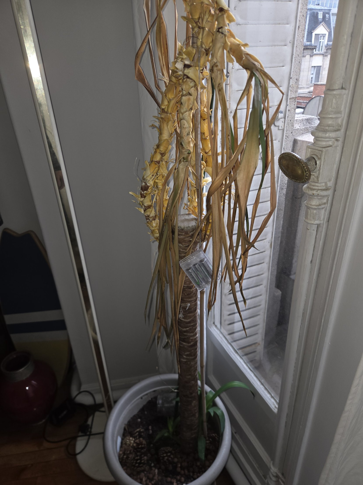

Feuilles qui ramollissent et retombent
Cause probable : manque de lumière (vérifier aussi l'arrosage).
Que faire : lui donner le plein soleil ; à l'intérieur, de préférence le sortir sur un balcon ou une terrasse ensoleillés.
Yucca glorieux. Facile en extérieur.
Plante d'extérieur rustique : plein soleil, peu d'eau et substrat très drainant. Elle s'adapte mal à un appartement chauffé.

Ce sont les mêmes cases que sur la page d'accueil.
Ce navigateur n'enregistre pas les coches.
Cause probable : manque de lumière (vérifier aussi l'arrosage).
Que faire : lui donner le plein soleil ; à l'intérieur, de préférence le sortir sur un balcon ou une terrasse ensoleillés.
Cause probable : manque d'eau, ou simplement chute naturelle des feuilles basses.
Que faire : toucher la terre et arroser si les 5 premiers centimètres sont secs. Les feuilles sèches peuvent être retirées, avec des gants.